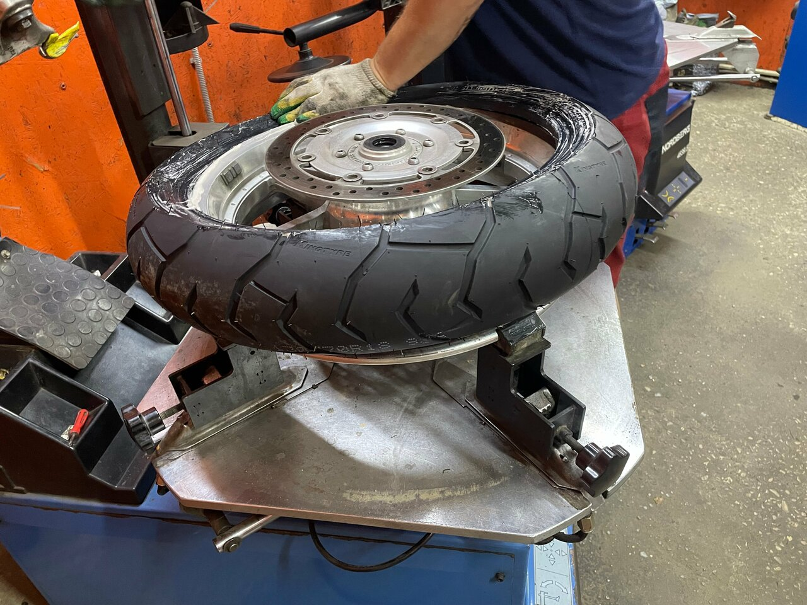

Шиномонтаж · Калуга
АВТО-
МОТО
Шиномонтаж на Правобережье.
Каждый день с 08:00 до 23:00.

Мастерская
Услуги
Пора менять резину, спускает колесо или после ямы бьёт руль? Позвоните — обсудим, что случилось и когда лучше подъехать.
Сезонная замена шин
Балансировка колёс
Правка дисков
Ремонт спускающего колеса
Фото мастерской
Отзывы водителей
5,0
★★★★★
668 оценок
«Принимают по живой очереди, на телефон быстро отвечают.»
«Оперативно сняли, всё осмотрели, исправили причину утечки.»
«Цена более чем адекватная.»
Оценки по темам
Доля положительных отзывов
- Шиномонтаж — 84%
- Персонал — 90%
- Время ожидания — 92%
- Ремонт — 85%
Контакты
Как нас найти
Ближайшие остановки
- Можайская улица
- 450 м
- Шопинский поворот
- 450 м
- Школа искусств
- 500 м
- Гипермаркет Глобус
- 710 м
- Библиотека
- 830 м